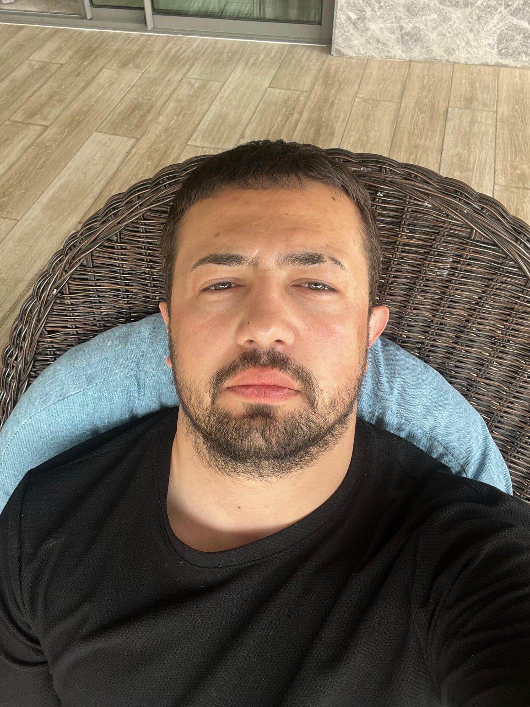

HOME
SPOR
ULAŞIM
KÜLTÜR
YAŞAM
ÖZEL
EKONOMİ
GÜNDEM
RESEN ANTALYA
Her Zaman Yanında
Muhabir Kadromuz

Görsel Yönetmen
Mete Burak DEMİRBAS
Sorumlu Yazı İsleri Müdürü
Burak ASAN
Genel Yayın Yönetmeni
Fatih CAN ARSLAN
Yazı İsleri Müdürü
Sinem BILGEN